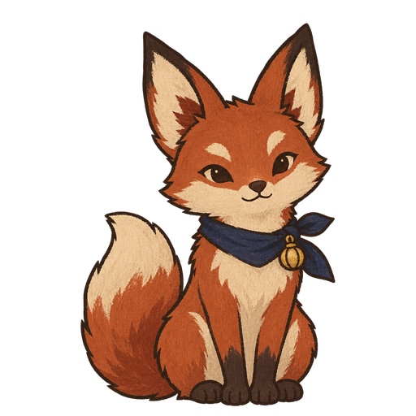

客室の準備 ・ 2 / 5 guests are ready

お客様をお部屋へご案内しましょう。先に、新しい言葉を見てください。
How to interact: Read the new word, then choose the reply that helps the guest.
LEARN ・ 2 / 5this shift
NEW WORD案内するあんないするto guide a person
お客様を お部屋へ 案内してください。
Tap dotted kanji for readingThe new word is taught above, not hidden in the help.¥10 for correct work